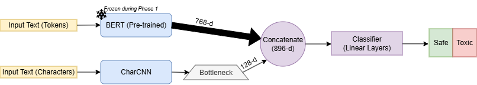

Natural Language Processing
Evaluating a Hybrid BERT+CharCNN Model for Context-Aware Toxicity Detection in Online Gaming
Project Description
Effective moderation in online gaming requires resolving two distinct challenges: context blindness regarding implicit sarcasm and tokenization blindness regarding evasive slang. This study evaluates a Hybrid BERT+CharCNN architecture on the conversational CONDA dataset, employing a asymmetric bottleneck to fuse morphological features with semantic embeddings. While matching state-of-theart baselines in overall F1-score, the Hybrid model achieves superior Precision (88.78%), reducing false positives critical for deployment safety. Furthermore, the architecture demonstrates significant domain robustness, outperforming standard BERT by +2.1% F1 on jargon-heavy utterances, confirming that bottlenecked character-level features effectively bridge the vocabulary gap in specialized gaming domains.
